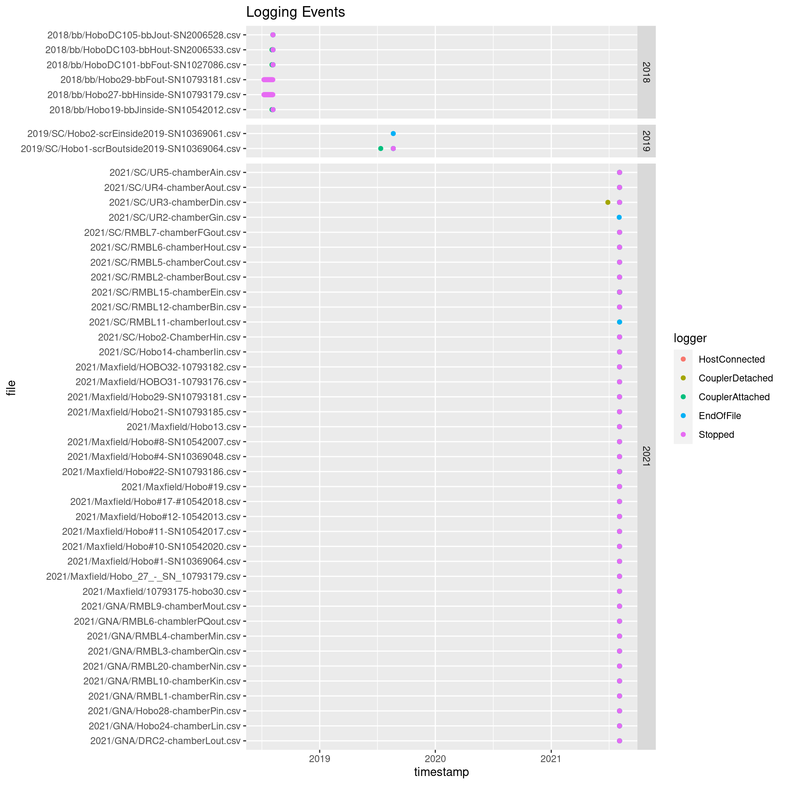

Ipomopsis temperature experiments: OTC performance
Carrie Wu, John Powers, David Hopp, Diane Campbell
2022-11-02
hobo_csvs <- tibble(file=list.files("./data/hobo/", recursive=T, pattern=".csv") %>% str_remove(".csv")) %>%
separate(file, sep="[/-]", into=c("year","site","n1","n2","n3"), fill="right", remove = F) %>%
mutate(file = paste0(file, ".csv")) %>%
write_csv("data/hobo_csvs.csv")
hobometa <- read_csv("./data/CWu OTC Hobos - metadata.csv") %>%
filter(replace_na(!str_detect(notes,"drop"), TRUE)) %>%
mutate(temp=fct_relevel(fct_recode(temp,"warmed"="OTC"),"control"))
#devtools::install_version("units", version = "0.6-7", repos = "http://cran.us.r-project.org")
#Sys.unsetenv("GITHUB_PAT")
#devtools::install_github("RyanLab/microclimloggers") #needs ud_units from old units version
#library(microclimloggers)
source("read_hobo_csv2.R") #tweaks to avoid units package
#safely_read_hobo_csv2 <- safely(read_hobo_csv2)
hobo_objects <- map(set_names(paste0("./data/hobo/", hobometa$file), hobometa$file), read_hobo_csv2)
hobo_startstop <- hobo_objects %>% map_dfr(~.x$df_logger, .id="file") %>% left_join(hobometa)
ggplot(hobo_startstop, aes(x=timestamp, y=file, color=logger)) + geom_point() + facet_grid(rows=vars(year), scales="free", space="free") +
labs(title = "Logging Events")
#trim to dates that OTCs were deployed (CWu OTC Hobos - duration.csv)
#TODO changing some of these cutoff dates manually based on data
hobos <- hobo_objects %>% map_dfr(~.x$df_env, .id="file")%>% left_join(hobometa) %>%
left_join(read_csv("./data/CWu OTC Hobos - duration.csv")) %>%
filter(Timestamp > OTC_start+days(1), Timestamp < OTC_end) %>%
rename(datetime = Timestamp, temp_C=Temp, intensity_lux=Illum) %>%
mutate(date = date(datetime), time = hour(datetime)+minute(datetime)/60)ggplot(drop_na(hobos,temp_C), aes(x=yday(date)+time/24, fill=temp_C, y=paste(year, site, temp, plotid))) +
facet_wrap(vars(year), ncol=1, scales="free_y") +
geom_tile() + scale_fill_viridis_c(option="inferno") +
labs(title = "Temperature over time")
ggplot(drop_na(hobos,intensity_lux), aes(x=yday(date)+hour(datetime)/24, fill=intensity_lux, y=paste(year, site, temp, plotid))) +
facet_wrap(vars(year), ncol=1, scales="free_y") +
geom_tile() + scale_fill_viridis_c(option="inferno")+
labs(title = "Light over time")
hobos.mean <- hobos %>% group_by(year, site, datetime, date, time, temp) %>%
summarize(mean_temp_C = mean(temp_C, na.rm=T), mean_intensity_lux = mean(intensity_lux, na.rm=T))%>%
pivot_wider(names_from=temp, values_from=c(mean_temp_C, mean_intensity_lux)) %>% drop_na(mean_temp_C_warmed) %>%
mutate(OTC_diff_C = mean_temp_C_warmed - mean_temp_C_control, OTC_diff_lux = mean_intensity_lux_warmed - mean_intensity_lux_control) %>%
write_csv("./data/hobos_mean.csv")
hobos.mean %>% ungroup() %>% group_by(year, site) %>%
summarize(across(contains(c("C","lux")), list(mean=mean, sd=sd))) %>%
kable()| year | site | mean_temp_C_control_mean | mean_temp_C_control_sd | mean_temp_C_warmed_mean | mean_temp_C_warmed_sd | mean_intensity_lux_control_mean | mean_intensity_lux_control_sd | OTC_diff_C_mean | OTC_diff_C_sd | OTC_diff_lux_mean | OTC_diff_lux_sd | mean_intensity_lux_warmed_mean | mean_intensity_lux_warmed_sd |
|---|---|---|---|---|---|---|---|---|---|---|---|---|---|
| 2018 | bb | 17.24866 | 12.063413 | 18.93961 | 13.48976 | 7928.146 | 12805.687 | 1.690944 | 1.550426 | -1360.7731 | 4719.292 | 6567.373 | 10171.348 |
| 2018 | GNA | 15.96277 | 11.434116 | 18.81069 | 14.90297 | 7385.635 | 11470.124 | 2.847922 | 3.659489 | 130.5749 | 2605.678 | 7516.210 | 11008.070 |
| 2019 | GNA | 15.46548 | 11.746557 | 17.87150 | 14.54723 | 7913.722 | 11339.104 | 2.406017 | 3.019420 | 1135.4250 | 3061.335 | 9049.147 | 12162.497 |
| 2019 | SC | 15.42663 | 10.755247 | 18.15899 | 13.54765 | 7451.669 | 10894.143 | 2.732357 | 3.062487 | -298.0404 | 2232.327 | 7153.628 | 10971.932 |
| 2021 | GNA | 15.00079 | 9.353624 | 16.94153 | 11.61215 | 5835.594 | 9571.010 | 1.940731 | 2.498417 | -2013.1825 | 5668.294 | 3822.412 | 5967.848 |
| 2021 | Maxfield | 16.79892 | 10.679969 | 18.48625 | 12.57918 | 8361.882 | 12139.925 | 1.687326 | 2.121104 | -1140.8926 | 2431.502 | 7220.989 | 10507.084 |
| 2021 | SC | 15.07808 | 10.235883 | 16.77748 | 11.53999 | 3181.302 | 5349.557 | 1.699405 | 1.638513 | -425.2761 | 2201.045 | 2756.026 | 3960.406 |
ggplot(hobos.mean, aes(x=mean_temp_C_control, y=mean_temp_C_warmed, color=OTC_diff_C)) +
facet_grid(rows=vars(site), cols=vars(year))+
geom_point(size=0.5) + geom_abline(slope=1, intercept=0, color="white") + coord_fixed() +
scale_color_viridis_c(option="magma") + geom_smooth(se=F, color="pink", span=0.2) + theme_dark() +
labs(title = "Average Hourly Temp Comparison (Scatter)")
ggplot(hobos.mean, aes(x=time, y=OTC_diff_C, color=mean_intensity_lux_control)) +
facet_grid(rows=vars(site), cols=vars(year))+
geom_line(aes(group=date),size=0.5) + geom_hline(yintercept=0)+
scale_color_viridis_c(option="magma") + theme_dark() +
geom_smooth(aes(group=1), se=F, color="white", span=0.15, method="loess") +
labs(x="Time of day", y="Mean temperature difference OTCs - controls (C)", color="Sunlight on controls (lux)") +
scale_y_continuous(breaks=-2:11) + theme(legend.position = "top", legend.key.width=unit(4,"lines"))+
labs(title = "Average Hourly Temp Comparison (Time of day)")
hobos.mean %>% pivot_longer(mean_temp_C_control:mean_temp_C_warmed, names_to="temp", values_to="temp_C") %>%
ggplot(aes(x=time, y=temp_C, linetype=temp, group=date)) +
facet_grid(rows=vars(site), cols=vars(year))+
#geom_line(aes(group=paste(date, temp)), size=0.2, alpha=0.4)+
geom_smooth(aes(group=temp), se=T, span=0.1, method="loess", size=1, color="black") +
scale_linetype_manual(values=c(2,1)) +
labs(y="Temperature (C)", x="Time of day", linetype="Temperature treatment") +
theme(legend.key.width=unit(2,"lines")) +
scale_y_continuous(breaks=seq(5, 40, by=5), expand=expansion(mult=0.1)) +
labs(title = "Average Hourly Temp Comparison, averaged across season")
library(colorspace)
circlecol <- hex(polarLAB(70, 60, seq(0, 2*pi, length.out = 20)*180/pi), fixup=T)
ggplot(hobos.mean, aes(x=mean_intensity_lux_control, y=OTC_diff_C, color=hour(datetime)+minute(datetime)/60)) +
facet_grid(rows=vars(site), cols=vars(year))+
geom_hline(yintercept=0) + geom_point() + geom_smooth(method="loess", se=F) +
scale_color_gradientn(colors=circlecol) +
labs(x="Mean light intensity at controls (lux)", y="Mean temperature difference OTCs - controls (C)", color="Hour")+
labs(title = "Temp vs. Light at different times of day")
hobos.minmax <- hobos %>% group_by(year, site, temp, plotid, id, date) %>%
drop_na(temp_C) %>%
summarize(max_temp_C = max(temp_C), min_temp_C = min(temp_C)) %>%
pivot_longer(max_temp_C:min_temp_C)
hobos.minmax.date <- hobos.minmax %>% group_by(year, site, temp, date, name) %>% summarize(value=mean(value))
ggplot(hobos.minmax, aes(x=yday(date), y=value, color=temp, linetype=name)) + geom_point() +
facet_grid(rows=vars(site), cols=vars(year))+
geom_line(data=hobos.minmax.date)+
labs(y="Temperature (C)", x="Date", linetype="Statistic", color="Temperature") +
scale_color_brewer(palette="Set1", direction=-1) + scale_y_continuous(breaks=scales::breaks_pretty(10)) +
labs(title = "Min and Max Daily Temp across Season")
hobos.max.long <- hobos.minmax.date %>% filter(name !="min_temp_C") %>% pivot_wider() %>%
pivot_wider(names_from=temp, values_from=max_temp_C) %>% mutate(OTC_diff_C = warmed-control)
ggplot(hobos.max.long, aes(x=control, y=OTC_diff_C)) + geom_point() + geom_smooth(span=0.6, se=F) + geom_hline(yintercept=0) +
labs(title = "Maximum daily temp")
mean(hobos.max.long$OTC_diff_C, na.rm=T)[1] 7.303121sd(hobos.max.long$OTC_diff_C, na.rm=T)[1] 2.528841hobos.minmax.tally <- hobos.minmax %>% count(year, site, plotid, temp)
kable(hobos.minmax.tally)| year | site | temp | plotid | id | n |
|---|---|---|---|---|---|
| 2018 | bb | control | F | 29 | 34 |
| 2018 | bb | control | F | 101 | 34 |
| 2018 | bb | control | H | 103 | 34 |
| 2018 | bb | control | I | 104 | 34 |
| 2018 | bb | control | J | 105 | 34 |
| 2018 | bb | warmed | G | 102 | 34 |
| 2018 | bb | warmed | H | 27 | 34 |
| 2018 | bb | warmed | J | 19 | 34 |
| 2018 | GNA | control | A | 22 | 44 |
| 2018 | GNA | control | B | 11 | 44 |
| 2018 | GNA | control | C | 17 | 44 |
| 2018 | GNA | control | D | 8 | 44 |
| 2018 | GNA | warmed | A | 1 | 44 |
| 2018 | GNA | warmed | B | 4 | 44 |
| 2018 | GNA | warmed | C | 13 | 44 |
| 2018 | GNA | warmed | D | 2 | 44 |
| 2018 | GNA | warmed | E | 10 | 44 |
| 2019 | GNA | control | V | 28 | 52 |
| 2019 | GNA | control | W | 7 | 52 |
| 2019 | GNA | control | X | 31 | 52 |
| 2019 | GNA | control | Y | 27 | 52 |
| 2019 | GNA | control | Z | 12 | 52 |
| 2019 | GNA | warmed | V | 29 | 52 |
| 2019 | GNA | warmed | W | 32 | 52 |
| 2019 | GNA | warmed | X | 21 | 52 |
| 2019 | GNA | warmed | Z | 22 | 52 |
| 2019 | SC | control | A | 8 | 46 |
| 2019 | SC | control | B | 1 | 46 |
| 2019 | SC | control | D | 4 | 46 |
| 2019 | SC | control | E | 11 | 46 |
| 2019 | SC | warmed | A | 17 | 46 |
| 2019 | SC | warmed | B | 30 | 46 |
| 2019 | SC | warmed | D | 10 | 46 |
| 2019 | SC | warmed | E | 2 | 46 |
| 2021 | GNA | control | L | 2 | 64 |
| 2021 | GNA | control | M | 9 | 64 |
| 2021 | GNA | control | PQ | 6 | 64 |
| 2021 | GNA | warmed | K | 10 | 64 |
| 2021 | GNA | warmed | L | 24 | 64 |
| 2021 | GNA | warmed | M | 4 | 64 |
| 2021 | GNA | warmed | N | 20 | 64 |
| 2021 | GNA | warmed | P | 28 | 64 |
| 2021 | GNA | warmed | Q | 3 | 64 |
| 2021 | GNA | warmed | R | 1 | 64 |
| 2021 | Maxfield | control | 1B | 31 | 70 |
| 2021 | Maxfield | control | 2A | 11 | 70 |
| 2021 | Maxfield | control | 2B | 17 | 70 |
| 2021 | Maxfield | control | 3B | 27 | 70 |
| 2021 | Maxfield | warmed | 1B | 21 | 70 |
| 2021 | Maxfield | warmed | 1C | 32 | 70 |
| 2021 | Maxfield | warmed | 2B | 13 | 70 |
| 2021 | Maxfield | warmed | 3A | 1 | 70 |
| 2021 | Maxfield | warmed | 3B | 19 | 70 |
| 2021 | Maxfield | warmed | 3D | 8 | 70 |
| 2021 | Maxfield | warmed | 4B | 22 | 70 |
| 2021 | Maxfield | warmed | 4C | 30 | 70 |
| 2021 | Maxfield | warmed | 5B | 12 | 70 |
| 2021 | Maxfield | warmed | 5D | 4 | 70 |
| 2021 | Maxfield | warmed | 6A | 10 | 70 |
| 2021 | Maxfield | warmed | 6C | 29 | 70 |
| 2021 | SC | control | A | 4 | 66 |
| 2021 | SC | control | B | 2 | 66 |
| 2021 | SC | control | C | 5 | 66 |
| 2021 | SC | control | F | 7 | 66 |
| 2021 | SC | control | H | 6 | 66 |
| 2021 | SC | control | I | 11 | 66 |
| 2021 | SC | warmed | A | 5 | 66 |
| 2021 | SC | warmed | B | 12 | 66 |
| 2021 | SC | warmed | D | 3 | 66 |
| 2021 | SC | warmed | E | 15 | 66 |
| 2021 | SC | warmed | G | 2 | 66 |
| 2021 | SC | warmed | H | 2 | 66 |
| 2021 | SC | warmed | I | 14 | 66 |